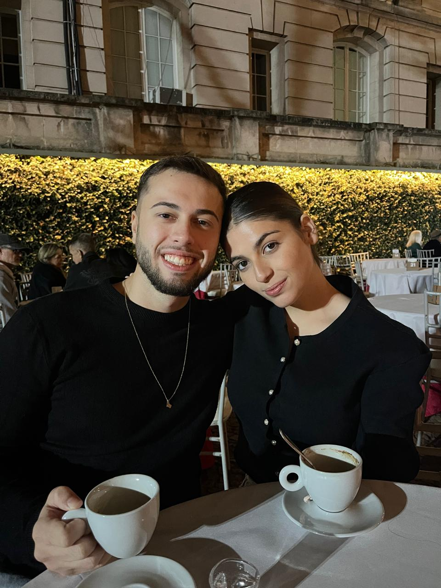
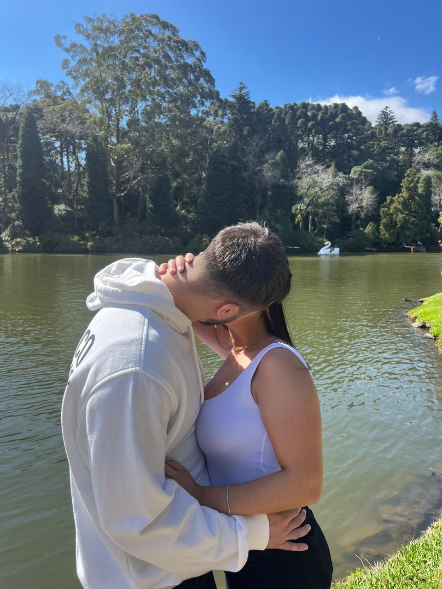
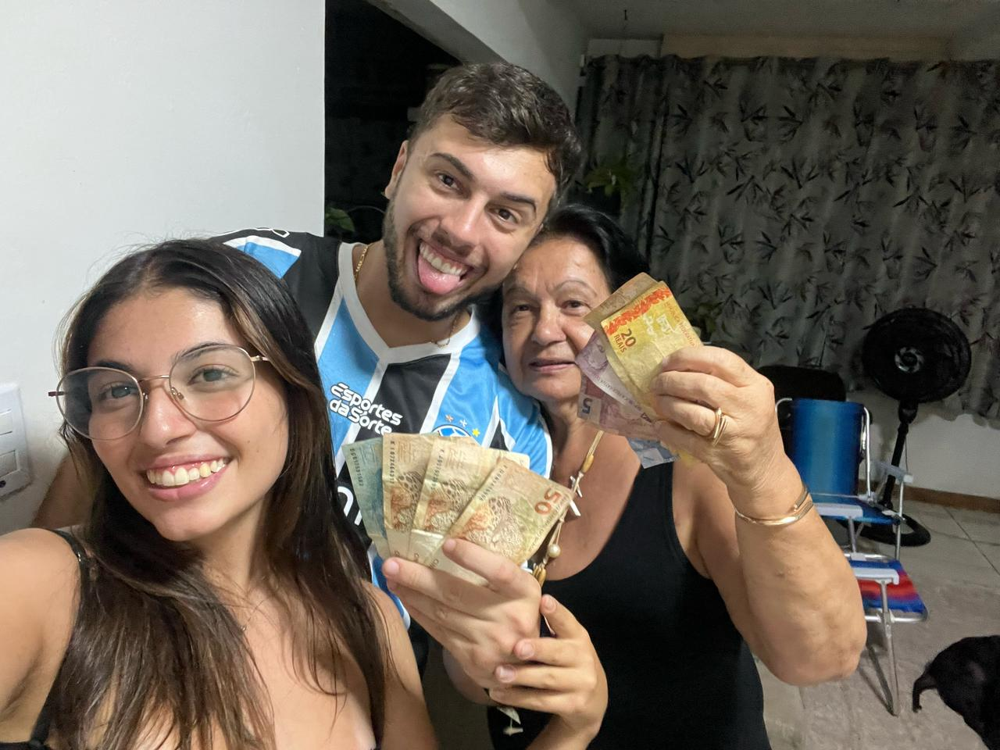
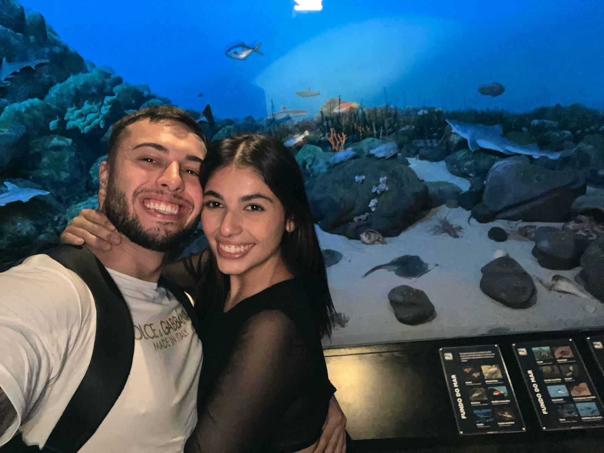
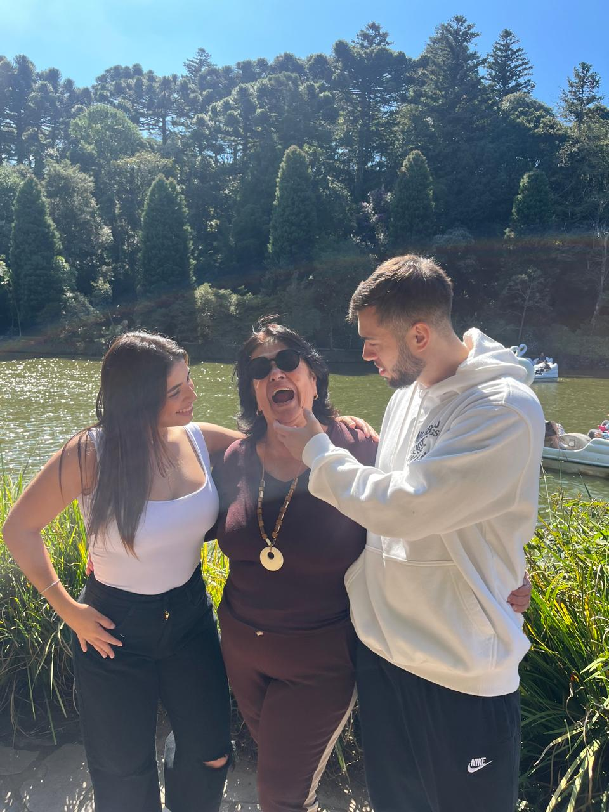
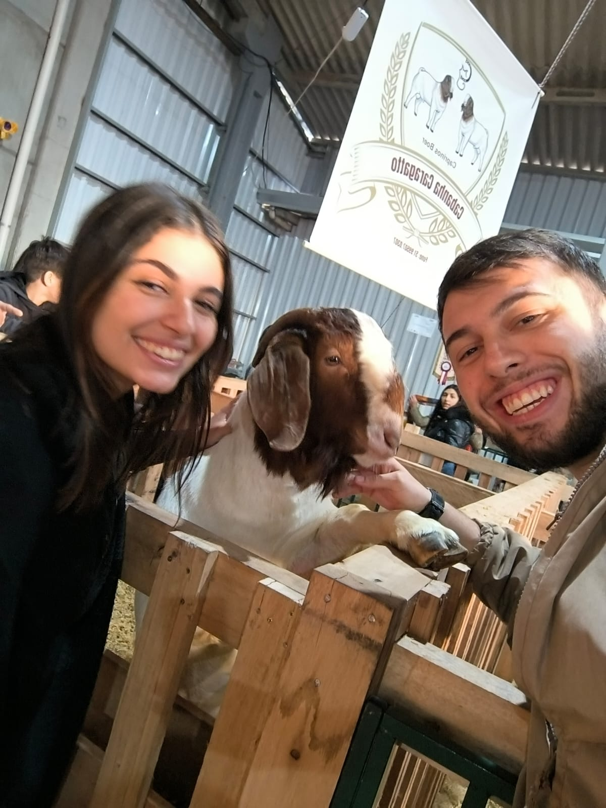

Noite que virou tradição

Beijos com vista pro nosso futuro
Nossa linha do tempo
Momentos que guardo na memória
Cada capítulo com você é um lembrete de que encontrei minha melhor companhia.
🌟
Primeiro encontro
A timidez deu espaço ao riso fácil e eu já sabia: queria repetir aquilo para sempre.
💌
Primeira declaração
Foi quando minhas palavras decidiram morar no teu coração — e nunca mais saíram.
🌅
Viagem inesquecível
Você roubou toda a beleza de Gramado para você e, ali, tive a prova: eu estava cada vez mais apaixonado.
💞
11 meses de nós
Seguimos crescendo lado a lado, somando sonhos e colecionando versões melhores de nós.
Nosso álbum vivo
Pequenos quadros, infinitos sentimentos
Aqui vai um breve poema desenhado em cada lembrança.
No calor do café, teu sorriso adoça minha noite.Onde o lago descansa, meu coração te encontra no reflexo.Princesa real que transforma jardim em conto nosso.Luz de fim de tarde, teu rosto vira farol para meus passos.Até no cochilo da estrada dividimos o mesmo sonho manso.À beira do rio aprendi que amar é repousar no teu abraço.Coragem veste colete quando teu riso segura minha mão.Nas águas correntes, teu abraço transborda alegria.Sol de meio-dia, tu és sombra doce que refresca meus dias.No deserto de areia teus beijos sopram ventos de coragem.Sobre ondas mansas teu riso aponta sempre para casa.Te vejo remar e aprendo: amor também é admirar de longe.Tu és poema em equilíbrio, leve e firme como teu passo.

Descobrimos fortuna nos laços e gargalhadas compartilhadas.

Mesmo rodeado de mares, teus olhos são meu mundo preferido.Planetas brilham, mas é teu beijo que acende meu universo.Gramado nos envolve e teu ombro vira inverno quentinho.Luzes do lago piscam confessando: meu lugar é teu colo.

Entre abraços de família teu carinho amplia o que é casa.

Até a cabra sorri quando sente o amor que espalhamos.No brilho da noite, dançamos entre luzes e promessas.
Surpresa
Uma carta só nossa
Para revelar a carta secreta, clique no botão “Abrir nossa carta secreta” lá no topo.